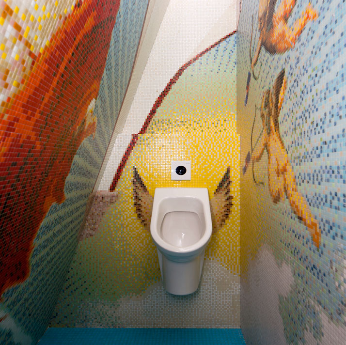

Redbull Amsterdam HQ
Filled with wall-to-wall polygons, Sid Lee Architecture transformed the old shipbuilding factory into a new and creative headquarters for Redbull Amsterdam. Using a juxtaposition of ideas—light vs dark, arts vs industry—the new headquarters is a perfect fit for the Redbull brand and location.
See more images and details on the space at Yatzer’s full article on Redbull’s Amsterdam HQ. Photography by Ewout Huibers
Additional post featuring Sid Lee’s work - Bota Bota